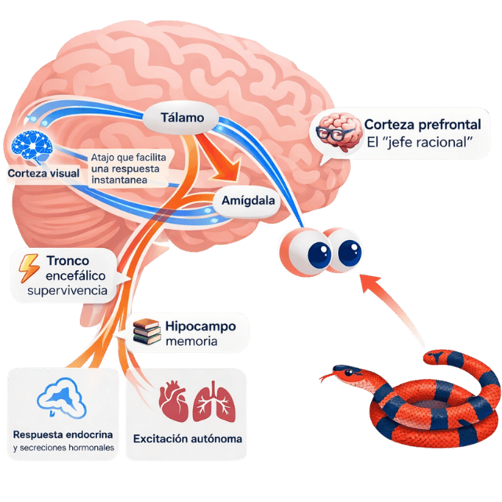

Tu cerebro no se cura solo con "echarle ganas".
La depresión, la ansiedad y el TDAH son alteraciones biológicas con correlatos neurofisiológicos claros. No es debilidad, no es falta de voluntad. Aquí entenderás qué está pasando realmente.
Tu cerebro explicado para todos
¿Qué está pasando ahí adentro?
Toca cada parte del cerebro para entender qué hace y cómo se relaciona con lo que sientes.

Toca una zona del cerebro
Cada parte tiene un trabajo. Conocerlos ayuda a entender lo que sientes.
Los mensajeros del cerebro
Los neurotransmisores son como mensajes entre neuronas. Cuando hay pocos o los receptores no los captan bien, aparecen los síntomas.
¿Qué le hace el estrés crónico al cerebro?
El estrés de un rato no es malo — es útil. El problema es cuando no se apaga.
La analogía que lo explica todo
¿Por qué "échale ganas" no funciona?
A nadie se le ocurriría decirle a un diabético: "échale ganas y tu páncreas va a producir insulina". La diabetes se trata con insulina, dieta y ejercicio porque es una enfermedad del páncreas. La depresión se trata con medicamento y psicoterapia porque es una alteración del cerebro.
Decir "échale ganas" a alguien con depresión es como pedirle que cure su diabetes con voluntad. La voluntad no es la causa del problema, pero la acción gradual sí es parte de la medicina: la Activación Conductual (un pilar de la TCC) requiere ejecutar acciones pequeñas a pesar de no tener ganas, porque esas acciones reactivan los circuitos de recompensa. No es echarle ganas: es tratamiento estructurado.
El modelo de dos capas
Hardware y Software
La psiquiatría trabaja el hardware: la estructura biológica del cerebro, sus neurotransmisores y su metabolismo. La psicología (TCC/DBT) trabaja el software: los programas de pensamiento y conducta.
Para que puedas aprender en terapia y reprogramar tu software, tu cerebro necesita estar biológicamente estable. Uno sin el otro no alcanza.
El medicamento no cura. Es el andamio que le da a tu cerebro la energía y neuroplasticidad para que la psicoterapia funcione.
¿Por qué siento que me voy a morir?
La ansiedad en el cuerpo
Los pacientes de primera vez no llegan diciendo "estoy triste". Llegan aterrorizados por síntomas físicos que interpretan como enfermedades mortales.
Neurobiología en 6 pasos
Comparativo · Actividad cerebral
El cerebro deprimido vs. el cerebro sano
Así se ve la diferencia de actividad entre un cerebro sano y uno afectado por depresión o ansiedad. No es debilidad — es biología medible.
Córtex prefrontal encendido. Planeación, razonamiento y regulación emocional funcionando. Amígdala en reposo.
Córtex prefrontal "apagado". Solo la amígdala sigue activa, detectando peligros inexistentes como amenazas reales.
Cuando la amígdala toma el control, el razonamiento lógico se desconecta. No es debilidad: es el circuito de supervivencia primitivo sobreactivado.
La metáfora de la balsa
¿Para qué sirve el medicamento?
Imagina que estás ahogándote en una tormenta. El medicamento es la balsa que te saca del agua. Pero si no aprendes a remar (psicoterapia), cuando te retiren la balsa, te vuelves a hundir.
El tratamiento base dura entre 9 y 12 meses. Las benzodiacepinas son solo para crisis agudas, nunca tratamiento de base: tienen potencial de dependencia real.
Cómo actúa el medicamento
BDNF y neuroplasticidad
Los virus del software mental
Distorsiones cognitivas
Un patrón de pensamiento que tu cerebro trata como verdad absoluta pero que distorsiona la realidad. No es un defecto de carácter: es un programa aprendido. Y los programas se pueden cambiar.
Ejercicio práctico
Detecta la distorsión
Lee cada pensamiento y toca la tarjeta para descubrir qué distorsión cognitiva contiene y cómo reestructurarlo.
Toca cualquier tarjeta para ver la descripción, un ejemplo y el cuestionamiento socrático para desarmarla.
Galería completa de distorsiones
🔍 El cuestionamiento socrático
Ante cualquier pensamiento catastrófico, aplica estas preguntas en orden:
¿Qué evidencia concreta tengo de lo que estoy pensando? ¿Son hechos observados o suposiciones?
¿Tiene lógica lo que estoy pensando? ¿Qué tan válido es realmente?
¿De qué me sirve lo que estoy pensando? ¿Me ayuda o me bloquea?
¿Qué me diría alguien importante para mí de lo que estoy pensando?
¿Qué le diría yo a alguien importante para mí si pensara lo que estoy pensando?
Si el peor escenario ocurriera, ¿podría manejarlo? ¿Han sobrevivido otras personas a algo similar?
Herramienta complementaria
Woebot: terapeuta de bolsillo basado en TCC
Woebot es una app de IA basada en TCC que funciona como un chat interactivo. Te hace check-ins diarios, identifica distorsiones cognitivas en tus pensamientos en tiempo real y te guía en la reestructuración cognitiva. No reemplaza a tu terapeuta ni a tu médico.
El nivel más profundo
Creencias centrales y cuestionamiento socrático
Debajo de las distorsiones cognitivas hay creencias centrales: convicciones profundas sobre ti, los demás y el mundo que se construyeron desde la infancia.
Estructura cognitiva
Esquemas → Creencias → Pensamientos automáticos
Los esquemas son patrones cognitivos estables que filtran la realidad. De ellos surgen las creencias, que producen pensamientos automáticos: esas frases breves que se imponen sin invitarlas.
Creencia central: "No merezco amor." → Pensamientos automáticos: "Estás fea", "No te va a hacer caso", "Te va a terminar dejando."
Tipos de creencias
Nucleares vs. periféricas
Las creencias nucleares constituyen tu identidad: difíciles de cambiar, dan sentido de quién eres. Las periféricas son más satelitales y se modifican con más facilidad.
Cuando una creencia nuclear se pone en duda, se genera inestabilidad profunda. La terapia trabaja con cuidado sobre ellas: no se destruyen, se reestructuran.
Tu guía de diálogo socrático
5 pasos para retomar el control de tus pensamientos
Automonitoreo activo
¿Qué practico esta semana?
Activar una técnica con intención explícita aumenta la adherencia. Marca lo que vas a implementar. (Tu selección se guardará automáticamente).
TDAH
"No avanzo." →
"Avanzar vale más que hacerlo perfecto." Enfócate en solo empezar.
Ansiedad
"No voy a poder." →
"Es difícil, pero he manejado situaciones antes." Recuerda tu control parcial.
Impulsos
"Lo merezco." →
"Estoy agotada, hay otras formas de calmarme." Busca la emoción real detrás.
Fundamento de la TCC
El modelo ABC de la Terapia Cognitiva
"No son las cosas las que nos perturban, sino las opiniones que tenemos de ellas." — Epícteto, siglo I d.C. Principio que la TCC convirtió en tratamiento con evidencia.
La Tríada Cognitiva de Beck
Pensamientos · Emociones · Conductas
Los tres vértices se influyen mutuamente en un circuito retroalimentado. La TCC interviene desde cualquiera de los tres para romper el ciclo.
Pensamiento
"No sirvo para nada"
Emoción
Angustia · Tristeza · Vergüenza
Conducta
Aislarse · Evitar · Abandonar
Al aislarse, el paciente confirma: "nadie me busca porque no valgo". La conducta retroalimenta el pensamiento original. Basta que aparezca un leve pensamiento para que todo el circuito se reactive.
Modelo ABC de Ellis
A → B → C
A — Antecedente: El evento activador. Lo que ocurrió objetivamente. Ej: "Me ignoraron en la reunión."
B — Belief (Creencia): La interpretación que hago del evento. Ej: "Soy un inútil, no valgo la pena."
C — Consecuencia: Emoción y conducta que resultan de B, no de A. Ej: Tristeza intensa + evitar futuras reuniones.
No es A lo que causa C — es B. Dos personas ante el mismo evento pueden tener consecuencias completamente distintas según su interpretación. Ahí es donde interviene la TCC.
Pensamientos automáticos
Rápidos, no invitados, creídos sin cuestionar
Son frases breves que aparecen sin pedirlas y se aceptan como hechos porque surgen de creencias nucleares que damos por absolutamente ciertas.
Ejemplo — Creencia nuclear: "No merezco el amor de nadie"
La TCC los hace conscientes y cuestionables. No los destruye — los evalúa con evidencia.
El vínculo terapéutico en TCC
Empirismo colaborativo: los dos científicos
Terapeuta y paciente trabajan como dos investigadores. Las creencias disfuncionales se convierten en hipótesis a contrastar, no en errores que corregir ni en verdades que aceptar. Juntos diseñan experimentos para probar si esas creencias resisten la evidencia real.
Aceptación
Aceptar plenamente al paciente aunque no se comparta su filosofía de vida.
Autenticidad
Ser genuino y honesto. La franqueza es un valor terapéutico, no un riesgo.
Empatía
Resonar con el sufrimiento del otro, acompañar sin mimetizarse con el dolor.
Higiene del sueño
El sueño como tratamiento
El sueño no es un lujo. Es el proceso durante el cual tu cerebro consolida la memoria, elimina toxinas y restaura los neurotransmisores. Sin sueño adecuado, ningún tratamiento funciona al 100%.
El círculo vicioso
Ansiedad → insomnio → más ansiedad
La ansiedad interrumpe el sueño. El sueño fragmentado debilita el córtex prefrontal (el "director" que frena la amígdala). Con el director débil, la amígdala se vuelve más sensible y la ansiedad empeora.
Intentar "forzar" el sueño genera más activación. La cama se asocia con frustración. Esa asociación es la que hay que romper con higiene del sueño estructurada.
Sustancias y sueño
Lo que empeora todo
Las 11 medidas de higiene del sueño
Herramienta interactiva incluida en esta app
TCC-I · Tu programa de sueño personalizado
La Terapia Cognitivo-Conductual para el Insomnio (TCC-I) es el tratamiento de primera línea recomendado por la ciencia — más efectivo que los somníferos a largo plazo. Hemos integrado sus herramientas clínicas directamente aquí: diario de sueño con cálculo de eficiencia, reestructuración cognitiva, control de estímulos, rutina de desactivación y mensajes motivadores. Toca para abrir el módulo.
Herramienta complementaria
CBT-i Coach: terapia cognitiva para el insomnio
Desarrollada por el Departamento de Asuntos de Veteranos de EE.UU., CBT-i Coach es la app de referencia clínica para el insomnio. Te guía en técnicas de TCC-I: control de estímulos, restricción del sueño, higiene del sueño y reestructuración cognitiva. Incluye diario de sueño, registro de horas y ejercicios de relajación. No reemplaza a tu terapeuta ni a tu médico.
Técnica de regulación
Respiración 5×5
Grounding · Regla 5-4-3-2-1
Para crisis disociativas o de pánico
Cuando el pánico desconecta del presente, ancla los sentidos uno a uno:
Para cuidadores · Demencia y Delirium
Reorientación y reambientación
Cuando un paciente mayor experimenta confusión o delirium, el entorno y la comunicación del cuidador son el primer tratamiento.
Reambientación
Reorientación cognitiva
Tu constancia y tu cariño son la primera línea de tratamiento. Ningún medicamento reemplaza la presencia segura de alguien conocido.
Terapia Cognitivo-Conductual para el Insomnio
TCC-I · Tu programa de sueño
La TCC-I es el tratamiento de primera línea para el insomnio crónico. Es más efectiva que los somníferos a largo plazo y sus efectos duran después de terminar el tratamiento. Este módulo replica las herramientas clínicas de CBT-i Coach.
Diario de sueño
Registro de esta noche
Complétalo cada mañana, cuando la información aún está fresca. La consistencia es clave.
La IA como prótesis cognitiva
Una herramienta de contención y cuestionamiento socrático entre sesiones. No como amigo complaciente, sino como coterapeuta configurado con rigor clínico.
Regla fundamental
La IA por defecto no es terapéutica
Por defecto, la IA responde para validar y agradar. Si le cuentas tu catastrofismo sin configurarla, te dará la razón y reforzará el miedo. Para que funcione clínicamente, debes darle un rol explícito desde el inicio.
🚨 Regla de oro: antes de cambiar tu tratamiento
Si la IA o un video te generó miedo sobre tu medicamento:
- No suspendas nada: el síndrome de discontinuación puede ser peor que el síntoma que te asusta.
- Pregunta primero: contacta a tu equipo terapéutico. Ellos tienen tu cuadro completo y la IA no.
- Dato clínico: las crisis de ansiedad no controladas producen más daño neuronal por cortisol que una dosis de rescate indicada.
Contraindicaciones absolutas
No uses IA terapéutica si:
- Ideación suicida activa: la IA puede dar respuestas inadecuadas en crisis.
- Síntomas de psicosis: la IA puede validar creencias delirantes.
- TOC con búsqueda de reafirmación: usar la IA como ritual de verificación empeora el ciclo.
En estos casos, contacta a Punto de partida (+52 55 6810 1894) o Línea de la Vida: 800-911-2000.
Cuestiona tu pensamiento paso a paso
Para aplicar el diálogo socrático guiado:
En vez de explotar, cuestiona con DBT
Cuando sientes que vas a reaccionar impulsivamente:
Por qué funciona: Nombrar la emoción reduce su intensidad. Todas las emociones son válidas; no todas las acciones que surgen de ellas son efectivas.
Cuestionamiento socrático nocturno
Cuando la mente catastrofiza y no hay terapeuta disponible:
Desbloquear tareas que abruman
Cuando el proyecto completo paraliza y no puedes empezar:
Por qué funciona: Externaliza la función ejecutiva de planeación al modelo, liberando RAM mental.
Antes de enviar una respuesta impulsiva
Para reescribir antes de provocar un conflicto:
Cuando el mismo pensamiento no para
Para salir del loop y evaluar si hay algo accionable:
Material pesado → digerible
Para hackear la dopamina y hacer el aprendizaje estimulante:
Contención a las 3 AM
Cuando el miedo escala en la madrugada:
Si hay riesgo suicida real: no uses la IA. Llama a Línea de la Vida: 800-911-2000.
Límites clínicos
Lo que la IA no reemplaza
La IA es una herramienta de contención y estructura entre sesiones. No diagnostica, no prescribe, no reemplaza la relación terapéutica. Su valor está en estar disponible a las 3 AM cuando el catastrofismo escala.
Si después de usar un prompt tu activación aumenta en lugar de bajar, cierra la IA y usa una técnica de grounding o contacta a tu terapeuta.
Tu hardware y el medicamento
No son pastillas para "sentirte diferente". Son herramientas que le dan al cerebro la capacidad biológica de aprender, reconectarse y recuperarse. Aquí entenderás exactamente por qué te las recetaron.
Diccionario interactivo
Elige tu medicamento
Selecciona la categoría que aparece en tu receta. Cada medicamento tiene su explicación sin tecnicismos, sus efectos adversos con probabilidades reales y un prompt listo para tu IA.
Estos medicamentos no son de efecto inmediato. Funcionan creando nuevas rutas neuronales (neuroplasticidad), lo que tarda biológicamente entre 4 y 6 semanas. Tomar y notar el efecto real requiere ese tiempo. El tratamiento completo dura 9–12 meses mínimo para que los cambios sean permanentes.
Aumenta la serotonina disponible entre neuronas. La serotonina es el "lenguaje de comunicación" del cerebro. Al aumentarla, las neuronas se reconectan y se genera neuroplasticidad real.
Generalmente por la mañana o mediodía. Si da sueño, se pasa a la noche. La dosis inicia baja y sube gradualmente para que el estómago no lo sienta.
Si algo te preocupa, escríbele a tu médico antes de suspenderlo. Nunca pares de golpe. El ajuste tarda 5 minutos de consulta pero evita semanas de malestar por discontinuación.
Pregúntale a tu IA sobre este medicamento
Copia este prompt y pégalo en ChatGPT, Claude o Gemini:
ISRS clásico. Excelente para ansiedad generalizada, depresión y fobias. También usado en trastorno disfórico premenstrual. Perfil de efectos adversos muy bien tolerado.
Con alimentos por la mañana. Reduce significativamente la náusea inicial si se toma con comida.
Si sientes algo inusual, avisa antes de suspender. El médico puede ajustar la dosis o cambiar el horario — son maniobras simples que evitan discontinuación.
Pregúntale a tu IA
Copia y pega en tu IA favorita:
Dual: actúa sobre serotonina y noradrenalina. La noradrenalina suma energía y concentración. Ideal para depresión con fatiga intensa, burnout o cuando el ISRS solo no fue suficiente.
Este medicamento no se puede parar de golpe — el síndrome de discontinuación es más intenso que con los ISRS. La bajada siempre debe ser gradual y con guía médica.
Este es uno donde el aviso es especialmente importante. Si quieres parar, el médico diseña un esquema de reducción gradual para que no lo sientas. Nunca lo cortes solo.
Pregúntale a tu IA
Prompt listo para copiar:
Actúa sobre dopamina y noradrenalina. No sube la serotonina como los ISRS. Ideal para depresión con mucha fatiga, desmotivación profunda, TDAH como coadyuvante o para dejar de fumar. No causa aumento de peso ni disfunción sexual.
Por la mañana, nunca de noche. Puede quitar el sueño si se toma tarde. Puede causar boca seca los primeros días.
Si notas ansiedad o insomnio nuevos, avisa antes de suspender. Se puede ajustar la dosis o cambiar el horario — no tienes que aguantarte ni parar solo.
Pregúntale a tu IA
El ISRS más antiguamente validado. Aumenta la serotonina disponible. Tiene vida media muy larga (2–6 días), lo que lo hace el más estable de su clase y el más fácil de retirar. Primera línea en depresión, TOC, bulimia, trastorno de pánico.
Por la mañana (es más activante que otros ISRS). Puede causar insomnio si se toma de noche. Dosis habitual: 20–40 mg/día.
La ventaja de la fluoxetina: por su vida media larga, el síndrome de discontinuación es raro. Aun así, no la pares sin avisar.
Inhibidor dual de serotonina y noradrenalina (IRSN). Trata depresión, TAG, fibromialgia y dolor neuropático. La noradrenalina añadida mejora la energía, concentración y dolor crónico. Especialmente útil si la depresión viene con dolor físico o fatiga severa.
Generalmente por la mañana con alimento. Dosis habitual: 60 mg/día. Inicio gradual para minimizar náusea.
La duloxetina requiere retiro gradual obligatorio. Nunca pares de golpe. El síndrome de discontinuación puede ser intenso (mareos, "descargas eléctricas", irritabilidad).
El TDAH es un déficit de dopamina en el lóbulo frontal (el "director ejecutivo" del cerebro). Los estimulantes no aceleran a alguien con TDAH — al contrario: normalizan el nivel de dopamina para que el frontal pueda inhibir impulsos, planear y terminar tareas. Como anteojos para los ojos, no una droga.
Aumenta la dopamina y noradrenalina en el lóbulo frontal. Mejora la concentración, la inhibición de impulsos, la planificación y la tolerancia a la frustración.
LI (Ritalin 10mg): Efecto en 30 min, dura 3–4 h. Útil para necesidades puntuales.
LP (Concerta 18/27/36/54mg): Sistema OROS — efecto 10–12 h con liberación gradual. Una sola toma matutina. Sin "montaña rusa".
LP (Tradea 20/30/40/50mg): Cápsula con microesferas. Duración 8–10 h. Se puede abrir y mezclar con alimento.
Solo por la mañana, con o sin desayuno. Nunca de tarde/noche. No hace falta tomarlo fines de semana si no se requiere el nivel de concentración.
Si sientes que "ya no funciona igual" o que te da más ansiedad, avisa. Puede ser una cuestión de dosis o de horario — no lo pares solo.
Pregúntale a tu IA
Profármaco que se convierte en anfetamina en el cuerpo. Duración de 12–14 horas con inicio más suave y final más gradual que el metilfenidato. Muy eficaz para TDAH severo o cuando hay atracones/craving asociado.
El "come-off" (cuando pasa el efecto) es mucho más suave que otras presentaciones. Menos "efecto montaña rusa" en el comportamiento durante el día.
Si notas que el nivel de hambre es preocupante o que tardas mucho en dormirte, avisa. El ajuste de dosis resuelve eso sin necesidad de cambiar medicamento.
Pregúntale a tu IA
Inhibidor selectivo de la recaptura de noradrenalina (no es estimulante). Mejora la atención y el control de impulsos sin riesgo de abuso. Efecto completo en 4–8 semanas (no inmediato). Primera línea cuando hay comorbilidad con ansiedad, tics o historia de adicciones.
Por la mañana o dividido en dos tomas. Dosis según peso. Se ajusta gradualmente en 3–4 semanas hasta dosis objetivo.
La atomoxetina NO es de efecto inmediato como el metilfenidato. Dale 4–6 semanas antes de decidir que "no funciona". La constancia es clave.
La diferencia crítica: las benzodiacepinas "apagan" el cerebro. Estos medicamentos inducen el sueño a través de mecanismos que no crean dependencia ni afectan la arquitectura del sueño REM de forma crónica.
A 12.5–25 mg no funciona como antipsicótico. A esta dosis, actúa como un potente antihistamínico que induce sueño profundo y reparador sin crear tolerancia, sin resaca y sin el riesgo de adicción de las benzodiacepinas.
Si ves "antipsicótico" en la caja y entras en pánico — no necesitas la dosis de antipsicótico. Tu dosis es micro. Es un medicamento completamente diferente a esas dosis.
Si sientes resaca o demasiado sueño de día, avisa antes de suspender. El ajuste puede ser tan simple como tomarla 30 minutos antes.
Pregúntale a tu IA
Reduce la hiperexcitabilidad neuronal. Excelente para ansiedad nocturna con componente físico (tensión muscular, dolor psicosomático, taquicardia de ansiedad). También ayuda a conciliar el sueño sin el riesgo de adicción de las benzodiacepinas.
Generalmente como rescate nocturno o PRN (cuando se necesita). No se toma todos los días salvo indicación. Se siente en 30–60 minutos.
Si sientes que lo necesitas más días de los indicados, es señal de que la ansiedad de base no está bien tratada — avísale a tu médico para revisar el tratamiento global.
Pregúntale a tu IA
Hormona natural producida por la glándula pineal. No es un sedante, es un regulador del reloj biológico. Le dice al cerebro "ya es de noche" y ajusta el ciclo sueño-vigilia. La presentación de liberación prolongada (LP) mantiene niveles estables durante la noche.
30–60 minutos antes de dormir, siempre a la misma hora. Dosis habitual: 2–5 mg. La clave es la consistencia del horario, no la dosis alta. Más no es mejor.
La melatonina no "noquea". Si esperas un efecto tipo benzodiacepina, te va a decepcionar. Su trabajo es más sutil: recalibrar tu reloj interno. Funciona mejor combinada con higiene del sueño (punto 11: control de estímulos).
Las benzodiacepinas NO son tratamiento. Son extintores. Cortan la crisis en 15–20 minutos pero no resuelven la causa. Usadas diario por más de 3–4 semanas crean dependencia. Su uso correcto: fracciones mínimas, solo en crisis reales, no como ansiolítico preventivo.
Actúa sobre el receptor GABA — el freno del sistema nervioso. Detiene una crisis de pánico en 15–20 minutos. Como extintor: necesario en el momento correcto, peligroso si lo usas para todo.
Más de 3 semanas diarias = tolerancia y dependencia. El cerebro deja de producir GABA solo. Quitar abruptamente causa convulsiones. Nunca lo cortes de golpe si llevas meses usándolo.
Si llevas semanas usándolo diario, no lo pares tú solo. La reducción debe ser gradual y médicamente guiada. Avísale a tu médico para diseñar un esquema de disminución seguro.
Pregúntale a tu IA
Benzodiacepina de acción prolongada (vida media 18–50 h). Actúa sobre GABA como el alprazolam pero con efecto más sostenido y gradual. Menos "pico" de alivio pero menos rebote.
Alprazolam: Acción rápida (15 min), corta duración (4–6 h), mayor riesgo de rebote y dependencia. Ideal para crisis agudas.
Clonazepam: Inicio más lento (30–60 min), duración larga (8–12 h), menos rebote. Útil para TAG severo o como puente mientras hace efecto el antidepresivo. Ambas crean dependencia si se usan diario.
Las mismas reglas que el alprazolam: máximo 3–4 semanas de uso diario. El retiro debe ser gradual y supervisado. No pares de golpe si llevas semanas usándolo.
Antihistamínico con efecto ansiolítico. No es benzodiacepina, no crea dependencia. Bloquea el receptor H1 reduciendo la activación del SNA. Efecto en 30–60 minutos, duración 4–6 horas. Útil para ansiedad situacional, urticaria por ansiedad, o como inductor de sueño sin riesgo de abuso.
PRN (según necesidad) o como inductor nocturno. Dosis: 25–50 mg. No requiere retiro gradual.
Es una alternativa para ansiedad aguda en pacientes con historia de adicciones o donde las benzodiacepinas están contraindicadas.
Modula los canales de calcio que regulan la liberación de glutamato (el neurotransmisor excitatorio). Reduce la hiperexcitabilidad neuronal sin actuar sobre GABA como las benzodiacepinas. Efecto ansiolítico en 30–60 minutos. No es benzo, pero sí tiene potencial de uso indebido a dosis altas.
Ventaja: No causa la misma dependencia farmacológica que alprazolam/clonazepam. Efecto sostenido sin rebote severo.
Limitación: Inicio más lento (30–60 min vs 15 min del alprazolam). No "corta" una crisis aguda tan rápido, pero es mejor opción para ansiedad crónica o como puente.
El 95% de la serotonina se produce en el intestino. La Vitamina D convierte el triptófano en serotonina. Optimizar estos factores no reemplaza el medicamento — lo potencia.
Vitamina D3
Fundamental para convertir triptófano en serotonina. La vida moderna en interiores impide la síntesis natural. Deficiencia documentada en depresión resistente al tratamiento. Dosificación: según nivel en laboratorio.
El receptor de vitamina D está en regiones del cerebro relacionadas con el ánimo. Su deficiencia amplifica la respuesta inflamatoria que agrava la depresión.
Omega 3 (EPA/DHA)
"Limpia las tuberías" neuronales. Los ácidos grasos omega 3 son componentes de la membrana de las neuronas. Mejoran la fluidez de la transmisión sináptica. Potencian el efecto de los antidepresivos.
Mínimo 1–2g de EPA+DHA al día para efecto clínico. Los aceites de pescado genéricos suelen no alcanzar esa concentración.
Probióticos de alta densidad
La flora intestinal produce precursores de serotonina. La dieta moderna empobrecida en fibra y fermentados deteriora esa flora. Probióticos clínicos (multisouche, alta UFC) mejoran el eje intestino-cerebro directamente.
Metilfolato (B9 activa)
La vitamina B9 en su forma activa es cofactor en la síntesis de serotonina y dopamina. Especialmente importante en personas con variante MTHFR (frecuente en la población general) que no pueden convertir el ácido fólico regular.
¿Por qué iniciar medicamento?
Riesgo · Beneficio · Decisión
La decisión de iniciar tratamiento farmacológico nunca es arbitraria. Se basa en que el riesgo de no tratar es mayor que el riesgo del medicamento.
El medicamento no es el destino. Es la balsa que te saca de la crisis para que puedas nadar solo después. No te lo dan de por vida por default — se revisa en cada etapa del tratamiento.
Regla de oro: NUNCA suspendas ni modifiques sin avisar. El síndrome de discontinuación puede incluir mareos intensos, "descargas eléctricas" en la cabeza, llanto, náuseas. No porque el medicamento sea adictivo — sino porque el cerebro necesita ajustarse gradualmente. Escríbele a tu médico antes de cualquier cambio.
Guía personal del mes
Un recordatorio de lo que está pasando, por qué pasa y hacia dónde va el tratamiento. Para releer cuando el malestar hace dudar de que algo va a mejorar.
🤖 El trabajo de este mes con tu IA
Elige el tema que trabajarás este mes. Copia el prompt y pégalo en ChatGPT, Gemini o Claude — te dará un programa completo con actividades diarias basadas en TCC y evidencia.
No tienes que aguantarte ni esperar. Punto de partida: +52 55 6810 1894 · Línea de la Vida: 800-911-2000
🔔 Recordatorios para tu bienestar
Frases de reestructuración cognitiva
Programa recordatorios en tu teléfono con estas frases. Pon una alarma diaria a una hora fija con una frase distinta cada semana. Leerla en voz alta activa circuitos diferentes que leerla en silencio.
En tu teléfono, crea una alarma diaria (ej. 8:00 AM) con una frase como nombre. Cámbiala cada lunes. Leer la frase en voz alta al despertar reestructura activamente las creencias centrales. Es activación conductual + reestructuración cognitiva en 10 segundos.
Red de psicoterapia
El equipo terapéutico
El tratamiento de salud mental completo requiere dos piezas que se complementan: el psiquiatra ajusta la biología del cerebro; el psicólogo-terapeuta reestructura el pensamiento y el comportamiento. Sin los dos juntos, el tratamiento está incompleto.
Psiquiatría
El médico del cerebro
Es una especialidad médica. El psiquiatra tiene título de médico cirujano más 4 años de residencia en psiquiatría. Puede diagnosticar, recetar medicamentos y tratar la base neurobiológica de los trastornos mentales.
El Dr. Moya y la Dra. Sharon coordinan el manejo farmacológico y derivan a psicoterapia cuando es necesario — que es prácticamente siempre.
Psicología clínica
El terapeuta de la mente
El psicólogo clínico tiene licenciatura en psicología más especialidad o maestría clínica. No prescribe medicamentos, pero trabaja lo que el medicamento solo no puede resolver: patrones de pensamiento, emociones, conductas y relaciones.
El medicamento abre la ventana de oportunidad; la terapia construye la casa. Uno sin el otro deja el trabajo a medias.
Si tu psiquiatra te indicó psicoterapia
¿Por qué es importante la sesión semanal?
La psicoterapia no es "hablar de tus problemas". Es un entrenamiento cerebral estructurado. La frecuencia semanal no es capricho clínico — es la base de su eficacia:
Cuando el Dr. Moya o la Dra. Sharon indican psicoterapia, no es una sugerencia opcional. Es parte del tratamiento. Asistir semanalmente es tan importante como tomar el medicamento todos los días.
Tu equipo médico en Eutimya
Tus psiquiatras
Psiquiatra especialista en adultos. Manejo de trastornos del estado de ánimo, ansiedad, TDAH y trastornos del sueño. Enfoque basado en evidencia con acompañamiento cercano.
🌐 psiquiatra-cdmx.eutimya.orgEspecialista en psiquiatría infantil y adolescente. Diagnóstico y tratamiento de TDAH, trastornos del neurodesarrollo, ansiedad y depresión en niños y adolescentes.
🌐 paido.eutimya.orgTu equipo de psicoterapia
Psicólogos terapeutas
¿Por qué TCC y DBT?
La Terapia Cognitivo-Conductual (TCC) es el tratamiento con mayor evidencia científica para ansiedad, depresión y TDAH. Reestructura patrones en 12 a 16 sesiones.
La Terapia Dialéctico-Conductual (DBT) es la intervención de primera línea para Trastorno Límite y trauma complejo. Integra aceptación radical con cambio conductual.
Especialista en trauma complejo y adicciones. Atiende en línea.
📱 +52 55 4983 5710Perfil científico y muy estructurado. Ideal para TDAH.
📱 +52 55 1951 7821Proceso muy ordenado y progresivo.
📱 +52 55 2264 5240Enfoque cálido y cercano.
📱 +52 55 4194 8903Todos los terapeutas del equipo cuentan con posgrado y formación específica. El psiquiatra tratante coordina el manejo farmacológico con el proceso psicoterapéutico para garantizar coherencia. Si tienes dudas sobre a qué terapeuta acudir, pregúntale directamente al Dr. Moya o la Dra. Sharon en tu próxima consulta.
Protocolo clínico
Plan de seguridad · Riesgo suicida
Este plan es para usar en casa junto a alguien de confianza. No reemplaza la atención médica urgente. Si hay riesgo inminente, actúa ahora.
🔴 Señales de alerta
- Encierro prolongado, aislamiento.
- Llanto frecuente, irritabilidad, desesperanza.
- Comentarios directos o indirectos sobre muerte.
- Conductas de despedida o eliminación de redes.
- Búsqueda o acercamiento a objetos peligrosos.
- Cambios bruscos de sueño o apetito.
🏠 Medidas inmediatas (primeras 24–48 h)
- Retirar objetos peligrosos: cuchillos, navajas, objetos filosos, cordones, medicamentos accesibles.
- Puertas sin seguro (habitación y baño).
- Supervisión continua 24/7, sin dejar a la persona sola.
- Control de medicamentos: solo un familiar administra; bajo llave.
- Ambiente sin discusiones ni presiones.
💛 Apoyo emocional
- Validar sin juzgar: "Estamos contigo", "No estás solo/a".
- Facilitar tareas básicas: comer, hidratarse, bañarse.
- Rutina mínima diaria sin exigir productividad.
- Evitar frases como "échale ganas" o "otros están peor".
🚨 Emergencia o aumento de riesgo
- Intención clara de hacerse daño.
- Plan identificado (cómo/dónde).
- Impulsividad, agitación, desconexión.
- Intento reciente.
Acciones:
- Mantener compañía física inmediata.
- Retirar objetos peligrosos del entorno.
- Contactar a Punto de partida: +52 55 6810 1894.
- Si el riesgo es inminente, trasladar a hospitalización psiquiátrica.
Si existe duda sobre la seguridad, se actúa como si el riesgo fuera alto.
La prioridad es proteger la vida.